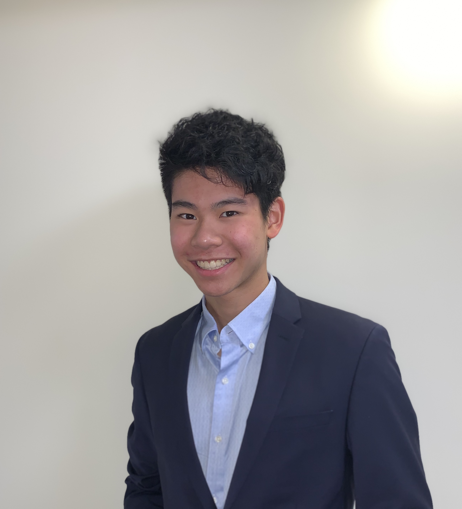
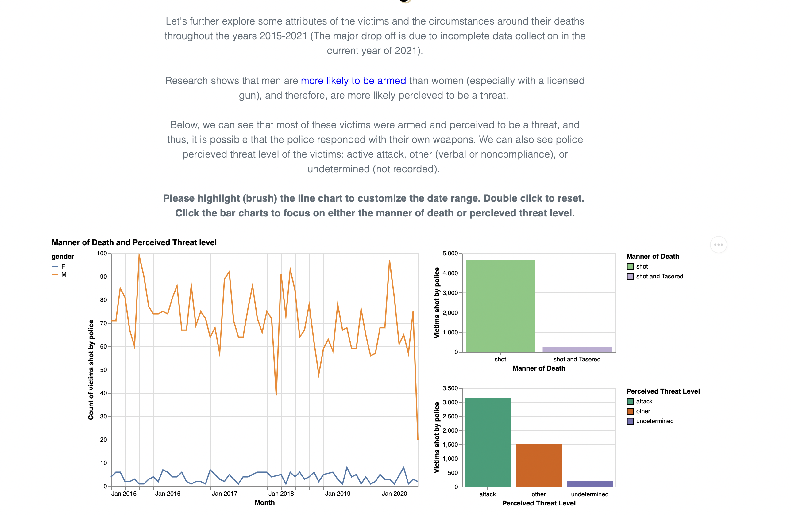
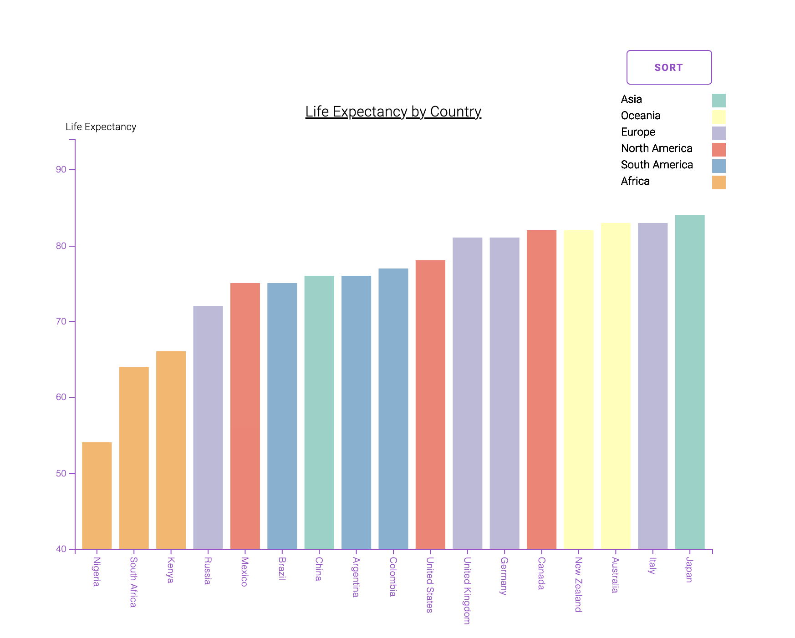

Brend Meng

Student @ Boston College
mengb@bc.edu
140 Commonwealth Ave, Chestnut Hill, MA 02467
mengb@bc.edu
140 Commonwealth Ave, Chestnut Hill, MA 02467
Brend is currently a senior at Boston College, studying Finance and Computer Science. He is originally from San Mateo, California, but his interest in the intersection between machine learning + global markets
has led him to work in New York City post graduation.
He has experience coding in Python, Java, JS (D3 Library), and R. In his free time, he enjoys playing basketball and playing with his dog.
{kind=link}
News
Senior Year Spring: Web App Development
January 18th, 2022 - Present
Senior Year Fall: Visualization
August 30, 2021 - December 16th 2021
In New York City for summer internship
June 7th, 2021-Aug 6th, 2021
Projects
Brend Meng, Sarah Kim, Spencer Kuldell
Project for CSCI3311-Visualization, Boston College Fall 2021
See Project Demo

Brend Meng, Sarah Kim, Spencer Kuldell
Project for CSCI3311-Visualization, Boston College Fall 2021
See Project Demo
